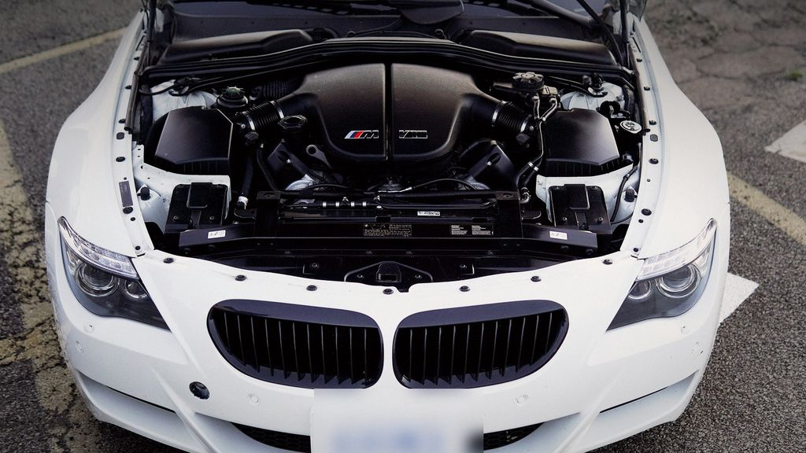

Mobile tuning in North York
Wolf Performance is a mobile service, so we come to you across North York and Toronto: your driveway, your garage or your workplace parking lot. Everything a remap or a diagnostic visit needs travels with us, including professional-grade tuning and diagnostic equipment. No drop-off, no waiting room, and no time lost getting the car somewhere.
North York roads, North York cars
Highway 401 through North York is one of the busiest stretches of highway in North America, and the 404, the DVP and Allen Road add their own crawl. Cars here spend a lot of time at low load and in heat-soaked traffic. We pay attention to throttle mapping, part-throttle torque and temperatures, so the car feels sharper in daily driving and not just on an empty on-ramp.

What we do for North York drivers
- ECU remapping & optimization with professional-grade tuning equipment
- TCU calibration where the platform supports it
- Diagnostics with pro-grade scan tools: full-system scans, live data and fault-code checks
- Scan and coding, plus a pre-tune health check before anything is written to the car
- Your original factory map is saved before every tune, so the car can go back to stock if you ever need to
- Heavier mechanical work (hardware installs, exhaust fabrication, engine work) is by referral for now
Get the visit right the first time
Send your year, make, model, current mods and goal when you book, plus the area where the car will be. We check what your platform supports first, so the visit is spent on the work, not on working out what is possible.
How to book from North York
- Send a booking request or call (416) 839-2266 with your year, make, model, current mods and goal.
- We reply with scope, timing and next steps.
- On the day we come to you: diagnostics first, then calibration, then a log to confirm the result, with clear notes on what changed.
Nearby service areas
FAQ — car tuning North York
Do you come to North York?
Yes. Wolf Performance is a mobile service, so we come to you in North York: at home, at work or wherever the car is parked safely. Book online or call (416) 839-2266 with your car and your area.
Do you calibrate automatic transmissions too?
Yes, TCU calibration is available where the platform supports it, so shift behaviour matches the new engine calibration.
What do you check before tuning?
We scan the car and review live data with pro-grade diagnostics. Any faults are found and discussed before a calibration is written.
Will my car still be a good daily driver?
That is the default goal. We aim for OEM+ behaviour — smoother, stronger delivery with daily reliability in mind — and we are upfront about what is realistic for your platform.